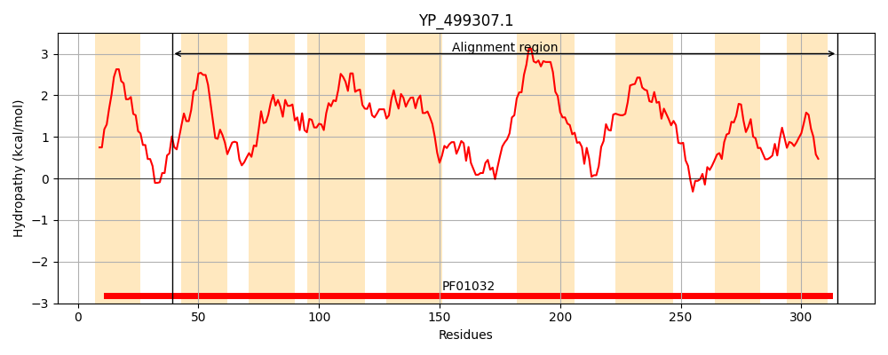
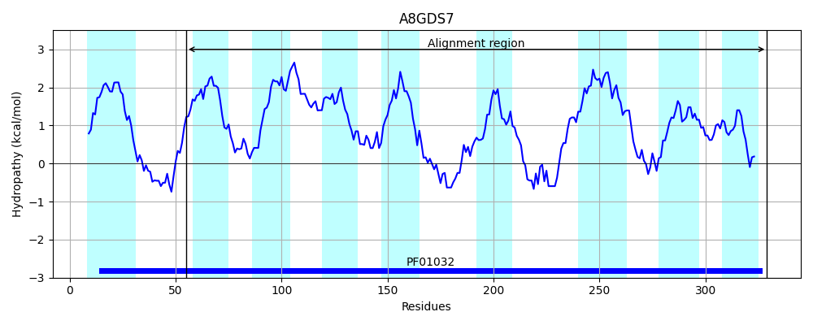
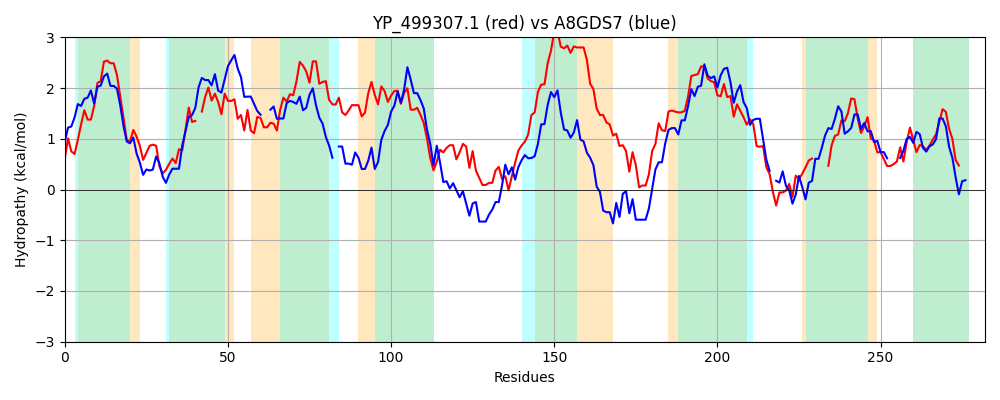

Hit Accession: A8GDS7
Hit TCID: 3.A.1.14.16
Hit Description: gnl|BL_ORD_ID|795 gnl|TC-DB|A8GDS7|3.A.1.14.16 Transport system permease protein - Serratia proteamaculans (strain 568).
Mach Len: 282
e:0.000000
Query TMS Count : 9
Hit TMS Count: 9
TMS-Overlap Score: 7.500000
Predicted Substrates:CHEBI:5651;ferroheme b
BLAST Alignment:
Score: 250 , Bit scores: 100 bits, E-value: 1.8e-24, Alignment length: 282, Percentage identity: 25
Query: 39 RLRKFILIILVGAAIATSVVIFQAITNNRLLTPSIMGLDAV-YLFIKVLPVFLFGIQSVWVTNVYLNFILTLITMVLFALILFQGIFKIGHFSIYFILLIGVLLGTFFRSITGFIQLIMDPESFLAIQSSMFANFNASNSNLVTFSAVLLVILLVITILLLPYLDVLLLGRAEAINLGISYEKLTRILLVIVSVLVSVSTALVGPITFLGLLTVNLAHELMKTYEHKYIL----IATICLSWISLFSAQWVVESVFEATTEMSILIDLIGGSYFIYLLVRRR 315
RL + +L +++G A+A S + Q + N L PS++G+ + LF+ ++ V + V +Y + + + +L +L+++ GI + GH S+ +LL G+ + + G + + + + M + + S + SA L++ +++T+L L++L LG EA LG++ ++ LL++ ++L+ + A+ G I F+GL+ +L + +H+++L + CL +S A+ +V A + ++ LIGG YF++L++R+R
Sbjct: 55 RLPRVLLAVVIGCALAVSGAVMQGLFRNPLADPSLLGISSGGALFVALIIVMPLALPPVIA--LYGHMLAAFLGSMLVSLLIY-GISRSGHGSLSRLLLAGIAINALCMAAIGVLSYLSNDQQLRQFSLWMMGSLSQSQWPTLAVSASLILPTILLTLLQARRLNLLQLGDEEAHYLGVNVQRAKLQLLLLSALLIGAAVAMSGVIGFIGLVVPHLV-RMRLGGDHRWLLPCSALGGACLLLVSDTLARTLVA---PAEMPVGLMTSLIGGPYFLWLVMRQR 329 | Protein Hydropathy Plots: |
|---|
|  |  |
Pairwise Alignment-Hydropathy Plot:
|
|---|
|  |